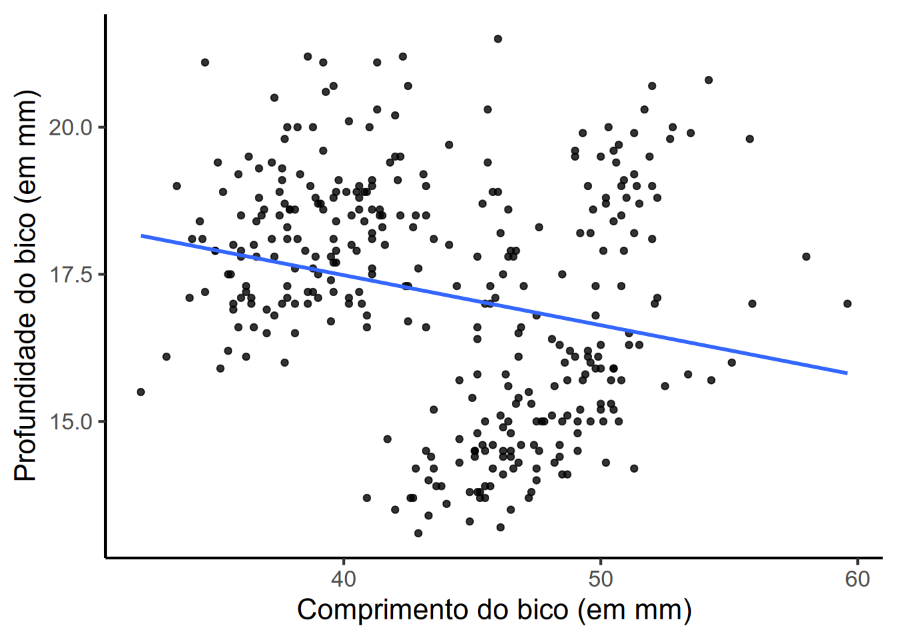

1. Calcule a correlação produto momento de Pearson entre o comprimento do bico e a profundidade do bico dos pinguins. Crie um gráfico de pontos (dispersão) com ggplot2 para acompanhar sua análise exploratória.
Pearson's product-moment correlation
data: pinguins$comprimento_bico and pinguins$profundidade_bico
t = -4.4591, df = 340, p-value = 0.0000112
alternative hypothesis: true correlation is not equal to 0
95 percent confidence interval:
-0.3328072 -0.1323004
sample estimates:
cor
-0.2350529
Os resultados nos indicam que as duas variáveis apresentam uma correlação negativa (ou seja, quando o valor de uma variável sobe, o valor da outra desce). A correlação parece estar entre uma correlação fraca e moderada (r = 0,235).
library(ggplot2)pinguins |>ggplot(aes(x = comprimento_bico,y = profundidade_bico)) +geom_point(fill ="tan4",size =1.5,alpha =0.8) +geom_smooth(method ="lm",se =FALSE) +theme_classic(16, "Arial") +labs(x ="Comprimento do bico (em mm)",y ="Profundidade do bico (em mm)")
1
A função geom_smooth() com o argumento method = "lm" adiciona uma reta de regressão linear para observar qual a tendência de associação entre as duas variáveis plotadas no gráfico. Pode servir como dica de qual a possível correlação entre as características.

2. Rode um teste t de duas amostras para verificar a diferença na média do comprimento da nadadeira entre os pinguins macho e fêmea. Usando as funções group_by() e summarise() do pacote dplyr, faça um resumo da média e da mediana dos comprimentos das nadadeiras estratificando pelos grupos (lembre-se que a base pinguins possui onze valores ausentes, os conhecidos NA, na coluna do sexo).
Welch Two Sample t-test
data: comprimento_nadadeira by sexo
t = -4.8079, df = 325.28, p-value = 0.000002336
alternative hypothesis: true difference in means between group fêmea and group macho is not equal to 0
95 percent confidence interval:
-10.064811 -4.219821
sample estimates:
mean in group fêmea mean in group macho
197.3636 204.5060
Parece que nosso teste t foi significativo (\(p<0,001\)) e através dos valores das médias vemos que, em geral, o comprimento das nadadeiras dos pinguins macho são maiores que o comprimento das nadadeiras dos pinguins fêmea (\(\mu_{macho} = 204,5\); \(\mu_{fêmea} = 197,4\)).
3. Crie um modelo de ANOVA de uma via para verificar se há diferenças na massa corporal dos pinguins baseado em sua espécie. Caso sim, rode um teste de Tukey para analisar quais grupos diferenciam entre si.
Df Sum Sq Mean Sq F value Pr(>F)
especie 2 146864214 73432107 343.6 <2e-16 ***
Residuals 339 72443483 213698
---
Signif. codes: 0 '***' 0.001 '**' 0.01 '*' 0.05 '.' 0.1 ' ' 1
2 observations deleted due to missingness
A partir dos resultados do modelo de ANOVA de uma via, parece que existem diferenças significativas de massa corporal entre as espécies (\(p<0,001\)). Podemos encontrar o p-valor observando a coluna Pr(>F) na saída acima.
Portanto, se faz interessante rodar um teste post-hoc como o teste de Tukey para checar a diferença entre cada par de espécies e ver onde essas diferenças de fato se apresentam.
TukeyHSD(anova_massa_especie)
Tukey multiple comparisons of means
95% family-wise confidence level
Fit: aov(formula = massa_corporal ~ especie, data = pinguins)
$especie
diff lwr upr p adj
Pinguim-de-barbicha-Pinguim-de-adélia 32.42598 -126.5002 191.3522 0.8806666
Pinguim-gentoo-Pinguim-de-adélia 1375.35401 1243.1786 1507.5294 0.0000000
Pinguim-gentoo-Pinguim-de-barbicha 1342.92802 1178.4810 1507.3750 0.0000000
Ao rodar o teste de Tukey, observamos que as diferenças na massa corporal dos pinguins se dá principalmente em uma grande diferença de peso entre os pinguins-gentoo quando comparados aos pinguins das outras espécies. Vocês podem observar os p-valores ao observar a coluna p adj. A diferença nas médias pode ser observada através da coluna diff na saída acima.